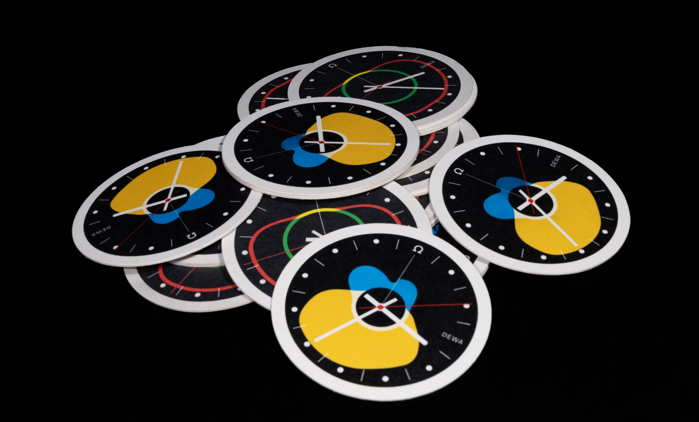
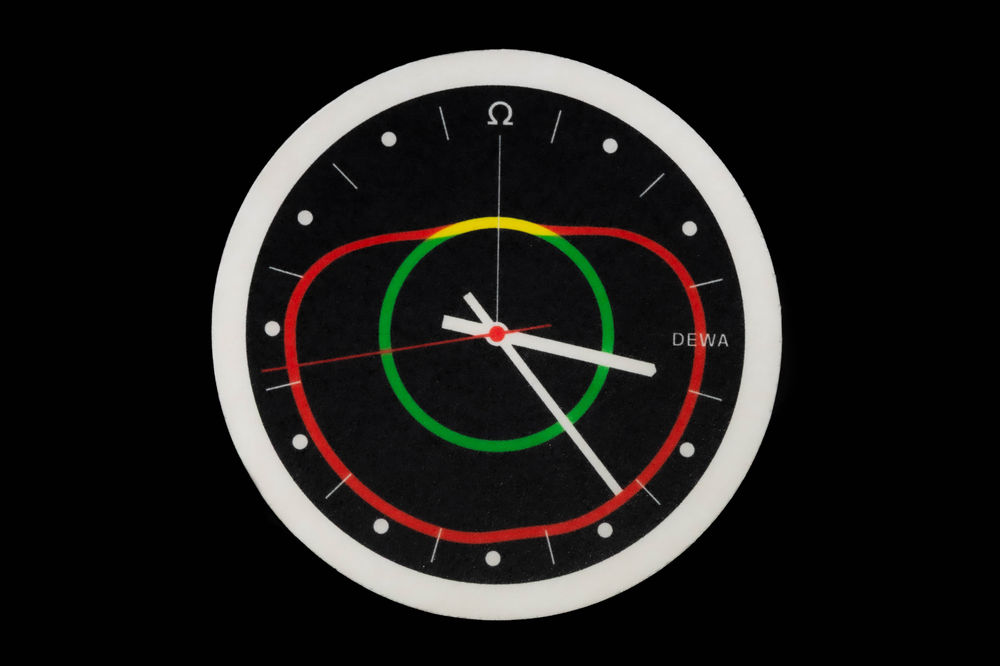

Energie der Zeit
Animation ist ein Puls aus Zeit und Bewegung, der sich Schicht um Schicht entfaltet. Zahnräder drehen sich, Zeiger wandern, und in ihrem Rhythmus entstehen Bilder, die die unsichtbaren Ströme der Energie sichtbar machen. Jede Uhr erzählt von Kreisläufen, die sich verzweigen, verbinden und wieder neu beginnen. Aus Licht, Form und stetigem Ticken wächst ein Geflecht, das zeigt, wie Versorgung, Wandel und Zukunft ineinandergreifen. So wird Animation zu einem lebendigen Mechanismus — präzise, wandelbar und immer weiterlaufend, wie das Energiesystem selbst.
- 2024 Animation